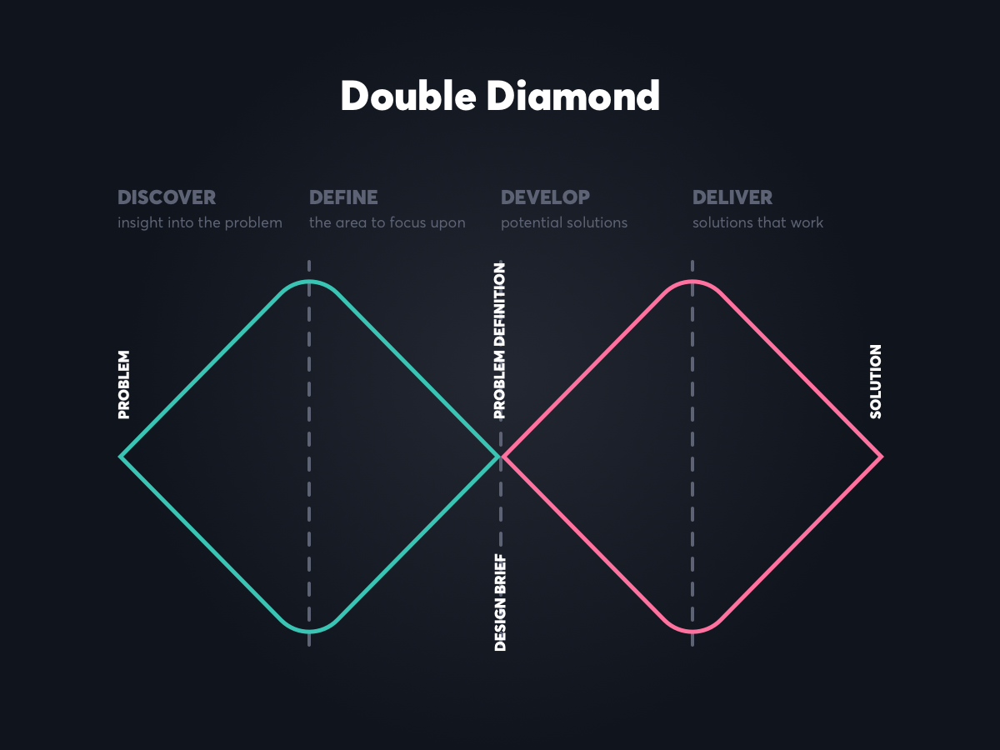

Design
My Process, Ideas, and Solutions

WorkDay Design Jam
I attended the Workday, Inc. Design Jam hosted by the University of Michigan School of Information where we explored the first 2 facets of the Double Diamond Model: Discover and Define.
The Problem: Look at the Class Registration Process with a Student Persona
Discover: Partnered with another design jam attendee to conduct an interview, focusing on empathy and utilizing my own silence in order to probe specificity. While interviewing about her experience with the registration process, I wanted to understand how/why she thought what she did, avoiding generalities.
Define: My team of 4 independently created as many sticky notes as possible within a 10 minute time frame. The goal here was to use headlines and ideate. Then, we created a journey map, grouping notes together based on which part of the registration they referred to. After this step, we identified pain points and discussed how they could be turned into opportunities. Looking at next steps, we wanted to utilize dot voting to focus on a feature we could generate a solution to.